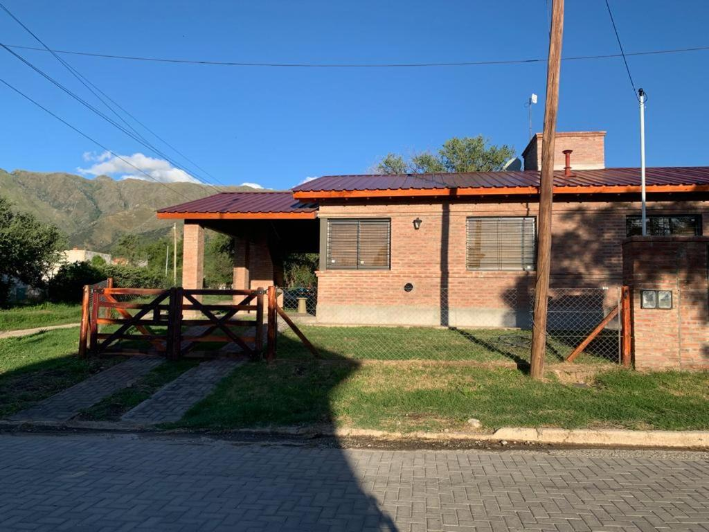
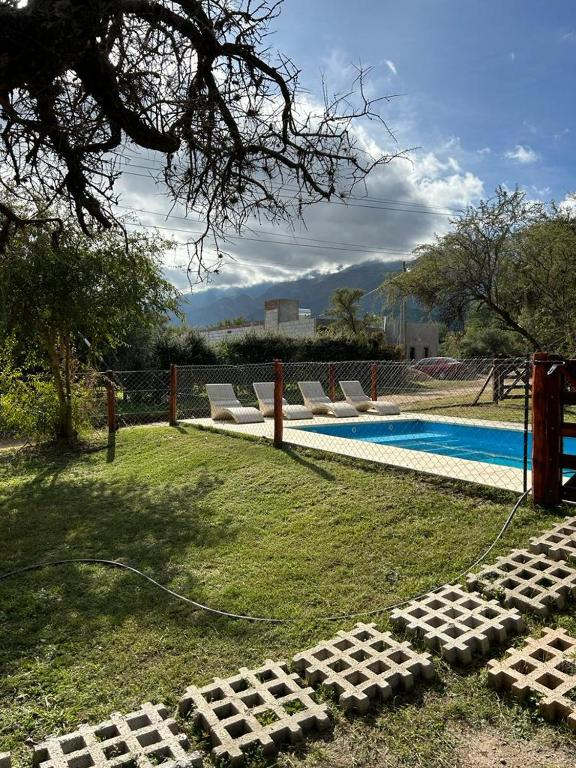
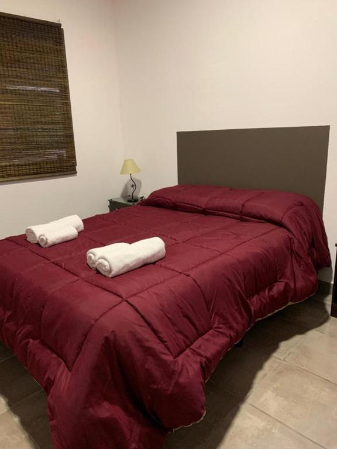
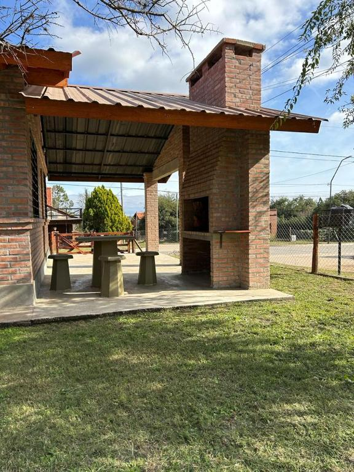

En el corazón de las sierras puntanas, rodeadas de aire puro, arroyos cristalinos y una paz difícil de describir, se encuentra Cielo Serrano, un complejo de cabañas pensado para quienes buscan descanso, naturaleza y confort en un mismo lugar. Nuestro hospedaje combina la calidez del estilo serrano con detalles modernos, ofreciendo un espacio acogedor donde cada amanecer se siente único.
Ubicados a pocos minutos del centro de Villa de Merlo, y con una vista panorámica privilegiada a las Sierras de los Comechingones, nuestras cabañas están equipadas con todo lo necesario para una estadía inolvidable: amplios ambientes, cocina completa, TV LED, Wi-Fi, aire acondicionado, calefacción y parrilla individual. Contamos además con piscina, solárium y amplios jardines para disfrutar del entorno natural en total tranquilidad.

En Cielo Serrano, cada detalle está pensado para que te desconectes del ruido y te conectes con la naturaleza. Ofrecemos atención personalizada, servicio de limpieza, ropa blanca, estacionamiento cubierto y recomendaciones turísticas para aprovechar al máximo tu visita. Desde caminatas por senderos serranos hasta tardes de mate frente al atardecer, nuestra meta es que vivas una experiencia auténtica, simple y profundamente relajante.
Ya sea que viajes en pareja, con familia o con amigos, Cielo Serrano te espera para disfrutar del microclima más benigno del país y descubrir por qué Merlo es uno de los destinos más elegidos de Argentina. Vení a respirar tranquilidad, disfrutar de la hospitalidad puntana y hacer de tus vacaciones un recuerdo inolvidable.
Promociones Exclusivas
¡¡¡Super promo (2 Personas)!!!
Antes: $20.000
$ 15.000 / Noche
- Dormitorio matrimonial
- Desayuno incluido
- Vista a la sierra
¡¡¡Promocion Familiar (4 Personas)!!!
$ 28.000 / Noche
- Dos dormitorios
- Parrilla individual
- Cochera cubierta
¡¡¡Promoción Semana Completa!!!
Estadía de 7 noches con una de regalo.
$ 168.000 / 7 Noches
- Válido fuera de temporada alta
- Ahorro total de una noche
- 7x6: ¡Pagas 6, Te Quedas 7!